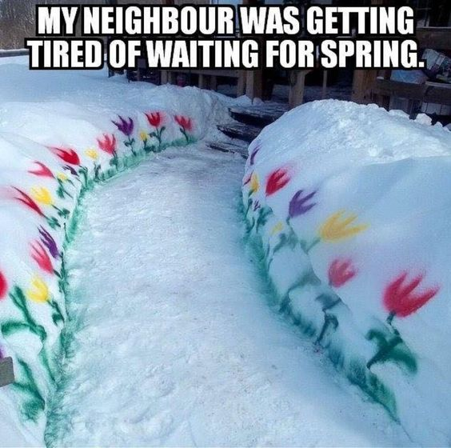

Hello there! I love a good joke, and there are some really good ones out there!
For almost every holiday, my mom sends me a card in the mail with jokes.
Sometimes she prints out a whole list of them from there internet, and sometimes she
hand-writes one inside or on the back. If you ever read one of her jokes,
you'll know they're as corny as they can get. So, I've chosen to compile a list of
some of the jokes my mother has told me... repeatedly... annually... Some of these
really could use their own holiday because they come back every year.
The most popular joke holiday for my mom is Halloween.
She always sends out a long printed list of jokes for this holiday.
And an email...and then tells them in person...and they're usually the same every year.
- Why are skeletons so calm?
- Because nothing gets under their skin.
- Why do skeletons hate the cold?
- It sends chills up their spine.
- Why didn't the skeleton rob the bank?
- Because he didn't have the guts.
- How does a vampire start a letter?
- Tomb it may concern,
In honor of the spring season, here are some corny jokes associated with popular springtime themes.
- What do you get when you cross a bunny with an onion?
- A bunion.
- How can you tell which rabbits are getting old?
Look for the gray hares.
- Does February like March?
- No, but April May.
- What did the tree say during springtime?
- "Well, this is a re-leaf!"
It may be springtime in Minnesota but there's still snow on the ground!
Well...
- ...we have a new season...
- sprinter.
- Why was the little snowman sad?
- Cuase he had a meltdown.
